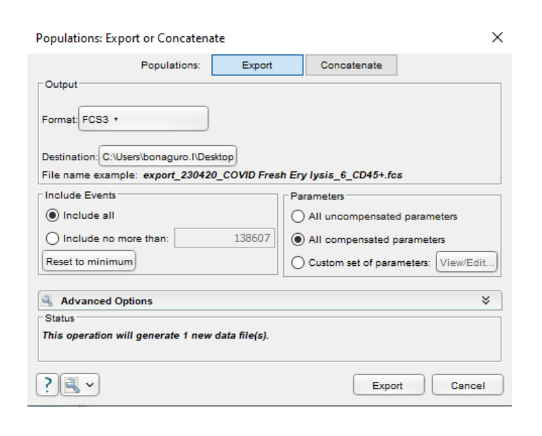

Prepare data for cyCONDOR analysis
Source:vignettes/Prepare_data_for_cyCONDOR_analysis.Rmd
Prepare_data_for_cyCONDOR_analysis.RmdWe provide here a detailed step-by-step guideline on how to export
compensated .fcs files from FlowJo v10 and
prepare the metadata annotation table for cyCONDOR
analysis.
Step 1
Within the FlowJo workspace, you can adjust compensation
as needed and optionally apply a basic gating hierarchy to
your data. This is recommended to remove debris and unwanted cells,
reducing the size of your final dataset and improving computational
efficiency. For instance, during immune cell analysis, consider gating
on CD45+ cells for cyCONDOR analysis.
Step 2
Right-click in the gate you want to export and select
Export/Concatenate Populations
Tip: If you want to export this gate for all the samples in
the workspace, before this step right-click on the desired gate and
select Select Equivalent Nodes to select the same gate in
all samples.

Exemplary FlowJo workspace (left) and exemplary
option window shown after right-clicking on the desired gate
Step 3
Now, choose the format for your exported data. FCS3 is
the recommended format. Additionally, select the destination folder
where you want to save the file. You have two options for selecting
which channels to export:
- Export all compensated values: This option is selected in the image below and will export all channels that have been compensated.
-
Manually select compensated channels: This option
allows you to choose specific compensated channels to include in the
exported
.fcsfile.
Note: If data were not compensated in FlowJo, for example
cyTOF data or BD S8 unmixed data, export uncompensated
values.

Population Export or Concatenate window
Step 4
Click on Export. Now all selected files will be exported
in the selected folder. As input for cyCONDOR the
data_path should only contain the .fcs files
intended for the analysis.

Exemplary folder with exported .fcs files
Step 5
The annotation table, used to load .fcs
files, should have the file names of all .fcs files in the
first column. Additional columns can be included to store any relevant
metadata for your analysis. There are no restrictions on the type of
information you can include in these metadata columns. We advise to save
the annotation table in a separate folder and save it as comma separated
.csv file. An example of annotation table is shown
below:
Exemplary metadata table visualized in Excel (left) and Notepad (right)